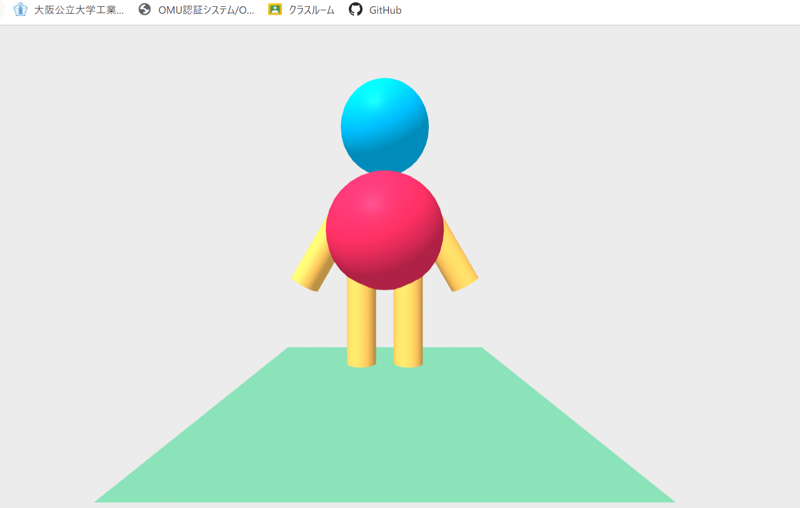

第3週目
3-1 JavaScript体験：VR空間を作る

vr空間
1.内容
言語を使って立体を移動、拡大縮小、色の変更等をして、立体図形を作った。
2.感想
初めて文字でプログラムしたのでちゃんとできるか不安だったが、思っていたよりすぐに内容をつかむことができ、かわいい人型を作れたので満足。
3-1 JavaScript体験：伝言プログラムを作る
伝言板
1.内容
伝言プログロムを作った。言語を使ってプログラムを組んだ。文字を打ってOKを押すと、その文字が画面上に表示されるようになっている。
2.感想
文字が細かくて、一文字でも間違えるとプログラムが作用しなかったので大変だった。しかし、ホームページを作った時と同様にこんな簡単に伝言板が作れることに驚いた。また、作ってみてHTMLなどにについて少し知ることができた。
3-2 JavaScriptプログラムの３次元空間の体験
1.内容
VR空間に入って立体の図形を移動させたり、白い球を出して跳ね返したりさせた。
2.感想
白い球をたくさん出して空間内を白い球で埋め尽くすのが面白かった。操作がまだまだなれていなかったけど、物体を持ち上げたり、移動したりはなんとかできたので、楽しめた。